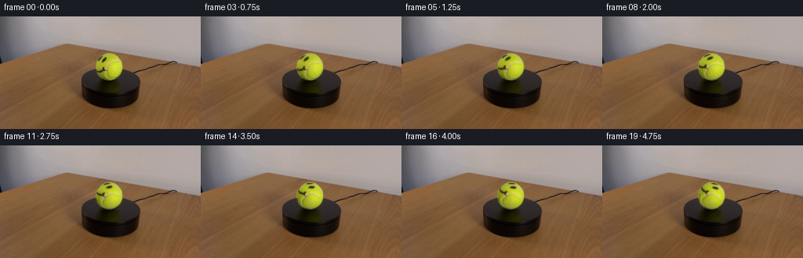
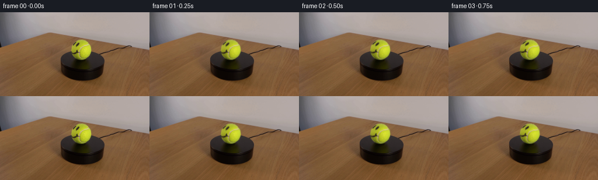

CODING AGENTS AS PIXEL WORLD MODELS
traex/DeepSeek-V4.1-Flash · 0168
点击播放 · 原生 RGB 像素
逐轮保存的候选
回放视频、检查图与代码变化。
每份候选均可单独播放。实际图片检查记录在下方工具轨迹中。
候选 01播放与检查图
点击播放 · 原生 RGB 像素


展开代码变化
--- 上一保存版本
+++ 本次保存版本
@@ -0,0 +1,128 @@
+from pathlib import Path
+
+import numpy as np
+from PIL import Image
+from scipy.ndimage import map_coordinates
+
+import artifact_io
+
+
+FRAME_COUNT = 20
+FPS = 4
+WIDTH = 256
+HEIGHT = 144
+
+# The ball in the supplied frame. The soft edge is left untouched so the
+# silhouette and contact shadow remain perfectly stable.
+CENTER_X = 139.0
+CENTER_Y = 64.0
+CORE_RADIUS = 16.25
+EDGE_RADIUS = 17.35
+
+# A little over one sixth of a turn over the five-second shot.
+DEGREES_PER_SECOND = 13.0
+
+
+def _sample_bilinear(image, x, y):
+ """Sample an HxWx3 image at pixel-center coordinates."""
+ result = []
+ for channel in range(3):
+ result.append(
+ map_coordinates(
+ image[:, :, channel],
+ [y, x],
+ order=1,
+ mode="nearest",
+ prefilter=False,
+ )
+ )
+ return np.stack(result, axis=-1)
+
+
+def _fit_ball_illumination(frame):
+ """Fit the fixed studio lighting across the ball, excluding facial ink."""
+ yy, xx = np.mgrid[:HEIGHT, :WIDTH]
+ dx = (xx - CENTER_X) / EDGE_RADIUS
+ dy = (yy - CENTER_Y) / EDGE_RADIUS
+ radius = np.hypot(dx, dy)
+
+ # Facial strokes are intentionally omitted from the light estimate.
+ luminance = frame.mean(axis=2)
+ fit_mask = (radius < 0.94) & (luminance > 105.0)
+ if np.count_nonzero(fit_mask) < 80:
+ fit_mask = radius < 0.94
+
+ # A smooth cubic light field reproduces the broad left-to-right falloff
+ # while keeping the ink and fine tennis-ball fuzz in the albedo layer.
+ features = np.stack(
+ [
+ np.ones_like(dx),
+ dx,
+ dy,
+ dx * dx,
+ dx * dy,
+ dy * dy,
+ dx * dx * dx,
+ dx * dx * dy,
+ dx * dy * dy,
+ dy * dy * dy,
+ ],
+ axis=-1,
+ )
+ design = features[fit_mask]
+ values = frame[fit_mask].astype(np.float64)
+ coefficients, _, _, _ = np.linalg.lstsq(design, values, rcond=None)
+
+ lighting = features @ coefficients
+ return np.clip(lighting, 24.0, 242.0)
+
+
+def generate_frames(first_frame):
+ first_frame = np.asarray(first_frame, dtype=np.uint8)
+ assert first_frame.shape == (HEIGHT, WIDTH, 3)
+
+ yy, xx = np.mgrid[:HEIGHT, :WIDTH].astype(np.float64)
+ dx = xx - CENTER_X
+ dy = yy - CENTER_Y
+ radius = np.hypot(dx, dy)
+
+ lighting = _fit_ball_illumination(first_frame)
+ albedo = first_frame.astype(np.float64) / lighting
+
+ # Preserve the image's own anti-aliased outer rim. The interior gets a
+ # short feather only where rotated samples approach the silhouette.
+ feather = np.clip((EDGE_RADIUS - radius) / (EDGE_RADIUS - CORE_RADIUS), 0.0, 1.0)
+ feather = feather * feather * (3.0 - 2.0 * feather)
+
+ frames = np.empty((FRAME_COUNT, HEIGHT, WIDTH, 3), dtype=np.uint8)
+ frames[0] = first_frame
+
+ for index in range(1, FRAME_COUNT):
+ angle = np.deg2rad(DEGREES_PER_SECOND * index / FPS)
+ cosine = np.cos(angle)
+ sine = np.sin(angle)
+
+ # Inverse mapping turns the visible texture clockwise.
+ source_x = CENTER_X + cosine * dx + sine * dy
+ source_y = CENTER_Y - sine * dx + cosine * dy
+ rotated_albedo = _sample_bilinear(albedo, source_x, source_y)
+ rendered = np.clip(rotated_albedo * lighting, 0.0, 255.0)
+
+ alpha = feather[:, :, None]
+ mixed = first_frame.astype(np.float64) * (1.0 - alpha) + rendered * alpha
+ frame = np.rint(mixed).astype(np.uint8)
+ frame[0] = first_frame[0]
+ frames[index] = frame
+
+ return frames
+
+
+def main():
+ case_dir = Path(__file__).resolve().parent
+ first_frame = np.array(Image.open(case_dir / "first_frame.png").convert("RGB"))
+ frames = generate_frames(first_frame)
+ artifact_io.save(frames, case_dir)
+
+
+if __name__ == "__main__":
+ main()
可观测工具轨迹
实际执行的命令与返回图片。
命令 1exit 0
/bin/bash -c "pwd && rg --files -g '"'!*.pyc'"' -g '"'!__pycache__'"' | sed -n '1,200p'"
命令 2exit 0
/bin/bash -c "printf '%s\\n' '--- prompt.txt ---'; sed -n '1,240p' prompt.txt; printf '%s\\n' '--- GENERATION_RULES.md ---'; sed -n '1,280p' GENERATION_RULES.md"
命令 3exit 0
/bin/bash -c "find . -maxdepth 2 -type f -printf '%p %s bytes\\n' | sort | sed -n '1,240p'; printf '%s\\n' '--- tools ---'; command -v ffmpeg; command -v ffprobe; command -v python3; python3 - <<'PY' import importlib for m in ['PIL','numpy','cv2','imageio','scipy','skimage','torch']: try: x=importlib.import_module(m); print(m, getattr(x,'__version__','ok')) except Exception as e: print(m, 'NO', type(e).__name__) PY"
命令 4exit 0
/bin/bash -c "sed -n '1,260p' artifact_io.py; printf '%s\\n' '--- player ---'; sed -n '1,260p' player_template.html"
命令 5exit 0
/bin/bash -c "python3 - <<'PY'
from PIL import Image
import numpy as np
im=Image.open('first_frame.png').convert('RGB')
a=np.array(im)
print('mode',im.mode,'size',im.size,'shape',a.shape)
print('overall min/max/mean/std',a.min(),a.max(),a.mean((0,1)),a.std((0,1)))
# coarse 16x9 block mean and dominant colors
h,w=a.shape[:2]
for gy in range(9):
row=[]
for gx in range(16):
b=a[gy*h//9:(gy+1)*h//9,gx*w//16:(gx+1)*w//16]
row.append('%02x%02x%02x'%tuple(np.median(b.reshape(-1,3),axis=0).astype(int)))
print(' '.join(row))
# exact colors counts
u,c=np.unique(a.reshape(-1,3),axis=0,return_counts=True)
idx=np.argsort(c)[-30:][::-1]
print('top colors')
for i in idx: print(tuple(u[i]),int(c[i]))
PY"命令 6exit 0
/bin/bash -c "python3 - <<'PY'
from PIL import Image
import numpy as np, cv2
im=np.array(Image.open('first_frame.png').convert('RGB'))
# kmeans
pix=im.reshape(-1,3).astype(np.float32)
crit=(cv2.TERM_CRITERIA_EPS+cv2.TERM_CRITERIA_MAX_ITER,100,0.2)
_,lab,cent=cv2.kmeans(pix,12,None,crit,10,cv2.KMEANS_PP_CENTERS)
lab=lab.reshape(im.shape[:2]); cent=cent.astype(int)
for i,c in sorted(enumerate(cent), key=lambda z: -np.sum(lab==z[0])):
m=lab==i; ys,xs=np.where(m)
print(i, tuple(c), int(m.sum()), 'bbox', (xs.min(),ys.min(),xs.max(),ys.max()), 'meanxy', (round(xs.mean(),1),round(ys.mean(),1)))
# label char map 64x36, dominant clusters
chars='0123456789AB'
# dominant class per block
for gy in range(36):
s=''
for gx in range(64):
b=lab[gy*4:(gy+1)*4,gx*4:(gx+1)*4]
vals,cnts=np.unique(b,return_counts=True); s+=chars[vals[cnts.argmax()]]
print(s)
PY"命令 7exit 0
/bin/bash -c "python3 - <<'PY'
from PIL import Image
import numpy as np, cv2
im=np.array(Image.open('first_frame.png').convert('RGB'))
hsv=cv2.cvtColor(im,cv2.COLOR_RGB2HSV)
# potential ball green yellow: H 20-50 OpenCV, sat > 60, value>40
mask=(hsv[:,:,0]>=20)&(hsv[:,:,0]<=50)&(hsv[:,:,1]>65)&(hsv[:,:,2]>35)
ys,xs=np.where(mask)
print('greenish mask',len(xs),'bbox',xs.min(),ys.min(),xs.max(),ys.max())
# use robust y 30:90
for thresh in [(20,55,60,30),(25,50,80,40),(25,48,100,50),(28,45,100,50)]:
m=(hsv[:,:,0]>=thresh[0])&(hsv[:,:,0]<=thresh[1])&(hsv[:,:,1]>thresh[2])&(hsv[:,:,2]>thresh[3])
ys,xs=np.where(m)
print(thresh,len(xs),(xs.min(),ys.min(),xs.max(),ys.max()) if len(xs) else '')
# dark mask platform
m=(im.mean(2)<35)
ys,xs=np.where(m)
print('dark',len(xs),(xs.min(),ys.min(),xs.max(),ys.max()))
# print color stats by rows/cols
print('row medians around')
for y in range(0,144,4):
med=np.median(im[y:y+4],axis=(0,1)).astype(int)
print(y,tuple(med))
# ball circle fit from hue mask
m=((hsv[:,:,0]>=20)&(hsv[:,:,0]<=50)&(hsv[:,:,1]>70)&(hsv[:,:,2]>35)).astype(np.uint8)
n,lab,stats,cent=cv2.connectedComponentsWithStats(m,8)
print('components')
for i in range(1,n):
x,y,w,h,area=stats[i];
if area>3: print(i,x,y,w,h,area,cent[i])
PY"命令 8exit 0
/bin/bash -c "python3 - <<'PY'
from PIL import Image
import numpy as np, cv2
im=np.array(Image.open('first_frame.png').convert('RGB'))
hsv=cv2.cvtColor(im,cv2.COLOR_RGB2HSV)
# crop ascii, 1 char per 2x2, label char based hue/sat/val
x0,x1,y0,y1=108,170,35,108
for y in range(y0,y1,2):
s=''
for x in range(x0,x1,2):
b=im[y:y+2,x:x+2].reshape(-1,3).mean(0)
hh,ss,vv=cv2.cvtColor(np.uint8([[b]]),cv2.COLOR_RGB2HSV)[0,0]
if vv<35: ch='#'
elif ss>75 and 20<=hh<=50: ch='G'
elif ss>55 and hh<20: ch='b'
elif ss<35 and vv>155: ch='W'
elif ss<55 and vv>110: ch='w'
elif vv>130: ch='+'
elif vv>80: ch='-'
else: ch='.'
s+=ch
print(f'{y:3d} {s}')
# coordinates/colors around smiley region, print HSV and RGB every pixel/block
print('crop precise 3x3 medians from x120-158 y45-84')
for y in range(45,84,3):
print('y',y,end=' ')
for x in range(120,159,3):
b=im[y:y+3,x:x+3].reshape(-1,3).mean(0)
hh,ss,vv=cv2.cvtColor(np.uint8([[b]]),cv2.COLOR_RGB2HSV)[0,0]
print(f'{int(hh):02x}{int(ss):02x}{int(vv):02x}',end=' ')
print()
PY"命令 9exit 0
/bin/bash -c "python3 - <<'PY'
from PIL import Image
import numpy as np, cv2
im=np.array(Image.open('first_frame.png').convert('RGB')).astype(float)
hsv=cv2.cvtColor(im.astype(np.uint8),cv2.COLOR_RGB2HSV).astype(float)
for y in range(40,104):
s=''
for x in range(112,168):
h,ss,v=hsv[y,x]; r,g,b=im[y,x]
if ss>55 and 18<=h<=52 and v>50: c='G'
elif ss>40 and 10<=h<18 and v>45: c='y'
elif ss>40 and 52<h<=80 and v>50: c='o'
elif v<20: c='#'
elif v<45: c='X'
elif v<80: c='x'
elif ss<25 and v>150: c='W'
elif ss<45 and v>110: c='w'
elif v>150: c='+'
elif v>100: c='-'
else: c='.'
s+=c
print(f'{y:3d} {s}')
PY"命令 10exit 0
/bin/bash -c "python3 - <<'PY'
from PIL import Image
import numpy as np
im=np.array(Image.open('first_frame.png').convert('RGB')).astype(np.float32)
# luminance gradient magnitudes
g=np.abs(np.diff(im.mean(2),axis=0))
for y in range(35,110):
if y%2==0: print(f'{y:3d} max{g[y].max():5.1f} mean{g[y].mean():5.2f} at {g[y].argmax()}')
# identify high chroma and dark local circle radius with background model from rows. print 1px exact crop labels every pixel x122-156 y47-84
for y in range(47,85):
s=''
for x in range(122,157):
r,gc,b=im[y,x]
if max(r,gc,b)-min(r,gc,b)<15 and max(r,gc,b)<100: c='#'
elif gc>r*1.15 and gc>b*1.2 and gc>45: c='G'
elif max(r,gc,b)<40: c='@'
elif max(r,gc,b)<70: c='X'
elif gc>r*1.03 and gc>b*1.08: c='g'
else: c='.'
s+=c
print(f'{y:3d} {s}')
PY"命令 11exit 0
/bin/bash -c "python3 - <<'PY'
from PIL import Image
import numpy as np
im=np.array(Image.open('first_frame.png').convert('RGB')).astype(np.float32)
# Rows and columns changes around center
for y in [55,60,65,70,75,78,80,81,82,83,84,85]:
d=np.abs(np.diff(im[y],axis=0)).mean(1)
peaks=np.argsort(d)[-10:]
print('row',y,[(int(x),round(float(d[x]),1)) for x in sorted(peaks)])
for x in [120,122,125,130,135,140,145,150,155]:
d=np.abs(np.diff(im[:,x],axis=0)).mean(1)
peaks=np.argsort(d)[-8:]
print('col',x,[(int(y),round(float(d[y]),1)) for y in sorted(peaks)])
PY"命令 12exit 0
/bin/bash -c "python3 - <<'PY'
from PIL import Image
import numpy as np
im=np.array(Image.open('first_frame.png').convert('RGB')).astype(np.float32)
# print crop labels based color semantics, 1 char 2 px but wide
# exact hsv values around smile
import cv2
hsv=cv2.cvtColor(im.astype(np.uint8),cv2.COLOR_RGB2HSV)
for y in range(50,82):
s=''
for x in range(120,158):
r,g,b=im[y,x]; h,ss,v=hsv[y,x]
# dark line by color vs yellow background
if ss>60 and 22<=h<=42 and v>35:
# brightness grouped
c='123456789'[min(8,int(v)//28)]
elif v<35: c='#'
elif v<70: c='X'
elif v<110: c='x'
else: c='.'
s+=c
print(f'{y:3d} {s}')
print('Pixel samples dark candidate RGB')
for y in range(53,72):
for x in range(128,142):
r,g,b=im[y,x]
if max(r,g,b)<100:
print((x,y),(int(r),int(g),int(b)), 'hsv',hsv[y,x].tolist())
PY"命令 13exit 0
/bin/bash -c "python3 - <<'PY'
from PIL import Image
import numpy as np
im=np.array(Image.open('first_frame.png').convert('RGB')).astype(np.float32)
# Color background sample and circle residual. Estimate center x139 y64 radius 18
Y,X=np.mgrid[:144,:256]
c=np.array([139.,64.]); r=18.
# print ball boundary color for cardinal rays vs background
for ang in range(0,360,30):
dx=np.cos(np.deg2rad(ang));dy=np.sin(np.deg2rad(ang));
vals=[]
for rr in np.arange(0,24,.5):
x=int(round(c[0]+rr*dx));y=int(round(c[1]+rr*dy)); vals.append(im[y,x].astype(int).tolist())
# find jumps between rr
d=[np.linalg.norm(np.array(vals[i+1])-vals[i]) for i in range(len(vals)-1)]
print(ang,'edge approx',np.argmax(d)*.5+0.25,'jump',round(max(d),1))
PY"命令 14exit 0
/bin/bash -c "python3 - <<'PY'
from PIL import Image
import numpy as np
im=np.array(Image.open('first_frame.png').convert('RGB')).astype(np.float32)
# fit foreground to smooth quadratic background using pixels just outside circle
Y,X=np.mgrid[:144,:256]
c=np.array([139.,64.]); r=17.
for rr in [17,18,19]:
m=((X-c[0])**2+(Y-c[1])**2>=rr*rr)&((X-c[0])**2+(Y-c[1])**2<rr*rr+25)
p=im[m]; xy=np.stack([X[m],Y[m]],1)
A=np.c_[np.ones(len(p)),xy[:,0],xy[:,1],xy[:,0]**2,xy[:,0]*xy[:,1],xy[:,1]**2]
coef=np.linalg.lstsq(A,p,rcond=None)[0]
pred=A@coef; err=np.sqrt(np.mean((p-pred)**2))
print('ring',rr,'fit rmse',err)
# surface appearance RGB distribution inside ball
m=((X-c[0])**2+(Y-c[1])**2<r*r)
p=im[m]
print('ball mean/std',p.mean(0),p.std(0),'minmax',p.min(0),p.max(0))
# high saturation yellow only
import cv2
hsv=cv2.cvtColor(im.astype(np.uint8),cv2.COLOR_RGB2HSV)
mm=m&(hsv[:,:,1]>90)&(hsv[:,:,0]>18)&(hsv[:,:,0]<45)
p=im[mm];print('yellow ball mean/std',p.mean(0),p.std(0),'n',len(p))
PY"命令 15exit 0
/bin/bash -c "python3 - <<'PY'
from PIL import Image
import numpy as np, cv2
im=np.array(Image.open('first_frame.png').convert('RGB'))
# display crop enlarged to tmp so I can use numeric pixel block visualization through image statistics
crop=Image.fromarray(im[38:108,108:172]).resize((512,560),Image.Resampling.NEAREST)
crop.save('.tmp/ball_crop.png')
# Print 1-char every pixel semantic with dark=@, green grad 0-9 based R maybe
Y,X=np.mgrid[:144,:256]
mask=(X-139)**2+(Y-64)**2<19**2
for y in range(44,86):
s=''
for x in range(120,158):
if not mask[y,x]: c='.'
else:
r,g,b=im[y,x].astype(float)
# black facial stroke likely low brightness compared to local green
v=max(r,g,b)
if v<50: c='@'
elif v<80: c='#'
elif v<110: c='x'
elif v<140: c='+'
elif v<165: c='-'
elif v<190: c='o'
elif v<210: c='O'
else: c='0'
s+=c
print(f'{y:3d} {s}')
PY"命令 16exit 0
/bin/bash -c "python3 - <<'PY'
from PIL import Image
import numpy as np, cv2
im=np.array(Image.open('first_frame.png').convert('RGB')).astype(np.int16)
h,w,_=im.shape
# coarse block color means 8x4 px, output hex + luminance class
for gy in range(0,h,4):
line=[]
for gx in range(0,w,8):
b=im[gy:gy+4,gx:gx+8].reshape(-1,3).mean(0).astype(int)
line.append('%02x%02x%02x'%tuple(b))
print(f'{gy:03d}', ' '.join(line))
PY"命令 17exit 0
/bin/bash -c "python3 - <<'PY'
from PIL import Image
import numpy as np
im=np.array(Image.open('first_frame.png').convert('RGB')).astype(np.float32)
# radial color at exact circle
for ang in [0,30,60,90,120,150,180,210,240,270,300,330]:
vals=[]
for rr in np.arange(12,22,.25):
x=int(round(139+rr*np.cos(np.deg2rad(ang)))); y=int(round(64+rr*np.sin(np.deg2rad(ang))))
vals.append((rr,tuple(im[y,x].astype(int))))
print('\\nANG',ang)
print(' '.join(f'{r:.2f}:{v}' for r,v in vals))
PY"命令 18exit 0
/bin/bash -c "python3 - <<'PY'
from PIL import Image
import numpy as np
im=np.array(Image.open('first_frame.png').convert('RGB')).astype(float)
# compare RGB to grayscale neighbor background on right
# Ball disk radius 17.5 center 139,64. Background mask outside 20
Y,X=np.mgrid[:144,:256]; R=np.hypot(X-139,Y-64)
# print ball row color samples x130..151 at y52..76 maybe map using ANSI impossible. Save montage of masks via channels.
# numeric estimate surface shading: normalized brightness along horizontal/vertical through ball
for y in [50,55,60,65,70,75,80]:
print('y',y, [(x, tuple(im[y,x].astype(int))) for x in range(130,151,3)])
PY"命令 19exit 0
/bin/bash -c "python3 generate.py && python3 - <<'PY'
from PIL import Image
import numpy as np
from pathlib import Path
p=Path('frames')
a=np.stack([np.array(Image.open(p/f'{i:02d}.png')) for i in range(20)])
f=np.array(Image.open('first_frame.png').convert('RGB'))
print('shape',a.shape,a.dtype)
print('frame0 identical',np.array_equal(a[0],f),'max diff',np.abs(a[0].astype(int)-f.astype(int)).max())
for i in [0,1,5,10,19]:
d=np.abs(a[i].astype(int)-f.astype(int))
print(i,'changed',np.count_nonzero(d),'max',d.max(),'mean changed',d[d>0].mean() if d.any() else 0)
print('files')
for x in sorted(Path('.').glob('*')):
print(x.name,x.stat().st_size)
PY"命令 20exit 0
/bin/bash -c "python3 - <<'PY'
from PIL import Image
import numpy as np, cv2
from pathlib import Path
F=np.stack([np.array(Image.open(f'frames/{i:02d}.png')) for i in range(20)])
base=F[0]
Y,X=np.mgrid[:144,:256]
ball=(X-139)**2+(Y-64)**2 <= 19**2
core=(X-139)**2+(Y-64)**2 <= 15.5**2
outside=~(((X-139)**2+(Y-64)**2)<=18**2)
print('outside max diff each frame')
for i in range(20):
d=np.abs(F[i].astype(int)-base.astype(int))
print(f'{i:02d} outside_n={np.count_nonzero(d[outside]):4d} outside_max={d[outside].max():3d} ball_mean={d[ball].mean():6.2f} ball_max={d[ball].max():3d} core_mean={d[core].mean():6.2f}')
# Color extrema and clipping in ball for all frames
for i in range(20):
p=F[i][ball]
print('ext',i,tuple(p.min(0)),tuple(p.max(0)), 'low',np.sum(p<5),'high',np.sum(p>250))
# Quantized luminance and chroma labels of first, mid, last crop
for idx in [0,5,10,19]:
print('\\nFRAME',idx)
im=F[idx]
for y in range(45,85,2):
s=''
for x in range(119,159,2):
b=im[y:y+2,x:x+2].reshape(-1,3).mean(0)
r,g,bb=b
if (x-139)**2+(y-64)**2>19**2: c='.'
elif max(b)<55: c='@'
elif max(b)<85: c='#'
elif max(b)<115: c='x'
elif max(b)<145: c='+'
elif max(b)<175: c='-'
elif max(b)<200: c='o'
elif max(b)<220: c='O'
else: c='0'
s+=c
print(s)
# stats of adjacent temporal differences, expect smooth and monotonicish
print('adj mean/max')
for i in range(1,20):
d=np.abs(F[i].astype(int)-F[i-1].astype(int))
print(i,round(d[ball].mean(),3),d[ball].max())
PY"命令 21exit 0
/bin/bash -c "python3 - <<'PY'
from PIL import Image
import numpy as np
from pathlib import Path
F=np.stack([np.array(Image.open(f'frames/{i:02d}.png')) for i in range(20)])
# Make enlarged montage of crops for all frames, 5x4.
crop=[]
for a in F:
crop.append(Image.fromarray(a[42:88,116:164]).resize((240,230),Image.Resampling.NEAREST))
sheet=Image.new('RGB',(5*240,4*(230+18)),(18,18,18))
from PIL import ImageDraw
D=ImageDraw.Draw(sheet)
for i,(im) in enumerate(crop):
x=(i%5)*240;y=(i//5)*(248)
D.text((x+4,y+2),f'{i:02d} t={i/4:.2f}s',fill='white')
sheet.paste(im,(x,y+18))
sheet.save('.tmp/all_ball_crops.png')
# enlarged difference to frame0 at frame 10 and frame19
base=F[0].astype(np.int16)
for i in [1,5,10,19]:
d=np.abs(F[i].astype(np.int16)-base)
vis=np.clip(d*4,0,255).astype(np.uint8)
Image.fromarray(vis).resize((1024,576),Image.Resampling.NEAREST).save(f'.tmp/diff_{i:02d}.png')
# screenshot RGB crop after reconstruct first frame via lighting and compare pixel stats in disk. save maps
PY"命令 22exit 0
/bin/bash -c "python3 - <<'PY'
from PIL import Image
import numpy as np
im=np.array(Image.open('first_frame.png').convert('RGB'))
Y,X=np.mgrid[:144,:256]; r=np.hypot(X-139,Y-64)
# dark chromatic/pixel candidates in ball
m=(r<17)&(im.max(2)<120)
ys,xs=np.where(m)
print('dark count',len(xs))
for y in range(ys.min(),ys.max()+1):
xx=xs[ys==y]
if len(xx): print(y,xx.tolist())
PY"命令 23exit 0
/bin/bash -c "python3 - <<'PY'
from PIL import Image
import numpy as np
im=np.array(Image.open('first_frame.png').convert('RGB')).astype(float)
# For facial ink mask: residual against smooth 2D fit from non-dark pixels
Y,X=np.mgrid[:144,:256]; r=np.hypot(X-139,Y-64)
dark=(r<18)&(im.max(2)<130)
# print candidate samples values sorted to understand ink color
vals=im[dark]
print('n',len(vals),'mean',vals.mean(0),'median',np.median(vals,0),'min',vals.min(0),'max',vals.max(0))
# image gradient around mask, candidate exact location
for y in range(48,83):
s=''
for x in range(120,158):
if r[y,x]>18.0: c='.'
elif dark[y,x]: c='#'
else: c=' '
s+=c
print(f'{y:3d} {s}')
PY"命令 24exit 0
/bin/bash -c "python3 - <<'PY'
from PIL import Image
import numpy as np
im=np.array(Image.open('first_frame.png').convert('RGB')).astype(np.float32)
# Fit quadratic background around ball, compare pixels. Use outside circle and model.
Y,X=np.mgrid[:144,:256]
c=(139,64)
for radius in [17.5,18,18.5,19]:
mask=((X-c[0])**2+(Y-c[1])**2>=radius**2)&((X-c[0])**2+(Y-c[1])**2<radius**2+8)
xy=np.stack([X[mask],Y[mask]],1).astype(float)
A=np.c_[np.ones(len(xy)),xy[:,0],xy[:,1],xy[:,0]**2,xy[:,0]*xy[:,1],xy[:,1]**2]
v=im[mask]
coef=np.linalg.lstsq(A,v,rcond=None)[0]
# predict all and residual
A2=np.c_[np.ones(X.size),X.ravel(),Y.ravel(),X.ravel()**2,X.ravel()*Y.ravel(),Y.ravel()**2]
pred=(A2@coef).reshape(144,256,3)
print('radius',radius,'ring fit RMSE',np.sqrt(np.mean((v-A@coef)**2)))
print('cardinal bg',[(a,im[64+int(np.sin(np.deg2rad(a))*20),139+int(np.cos(np.deg2rad(a))*20)].tolist()) for a in range(0,360,45)])
# Fit local linear background from around disk and compare residual; print per-pixel residuals at boundary
mask=(X-139)**2+(Y-64)**2<18**2
p=im[mask]
print('ball values percentile',np.percentile(p,[0,1,5,25,50,75,95,99,100],axis=0))
PY"命令 25exit 0
/bin/bash -c "python3 - <<'PY'
from PIL import Image
import numpy as np
im=np.array(Image.open('first_frame.png').convert('RGB'))
# exact pixel crop x120..157 y47..84 printed as hex chunks with mask radius. Need understand ball boundary and silhouette.
for y in range(45,86):
print(f'{y:3d}', ' '.join(f'{im[y,x,0]:02x}{im[y,x,1]:02x}{im[y,x,2]:02x}' for x in range(122,157)))
PY"命令 26exit 0
/bin/bash -c "python3 - <<'PY'
from PIL import Image
import numpy as np
im=np.array(Image.open('first_frame.png').convert('RGB')).astype(float)
# Ball center/radius candidates. compute radial edge gradient summed over angles
Y,X=np.mgrid[:144,:256]
for cx in np.arange(137,141.1,.5):
for cy in np.arange(62,66.1,.5):
for rad in np.arange(16,19.1,.5):
# samples 144 angles at radial edge, difference inside/outside
th=np.linspace(0,2*np.pi,144,endpoint=False)
xin=np.rint(cx+(rad-.6)*np.cos(th)).astype(int); yin=np.rint(cy+(rad-.6)*np.sin(th)).astype(int)
xo=np.rint(cx+(rad+.6)*np.cos(th)).astype(int); yo=np.rint(cy+(rad+.6)*np.sin(th)).astype(int)
d=np.linalg.norm(im[yin,xin]-im[yo,xo],axis=1)
score=d.mean()
if score>48: print(cx,cy,rad,round(score,2))
PY"命令 27exit 0
/bin/bash -c "python3 - <<'PY'
from PIL import Image
import numpy as np
im=np.array(Image.open('first_frame.png').convert('RGB')).astype(float)
Y,X=np.mgrid[:144,:256]; r=np.hypot(X-138.5,Y-64)
for cond in [
(r<17.4)&(im[:,:,2]>65)&(im.min(2)>55)&(im.max(2)>145),
(r<17.4)&(im[:,:,2]>80)&(im[:,:,1]>110),
(r<17.4)&(im[:,:,2]>95)&(im[:,:,1]>100),
(r<17.4)&(im[:,:,2]>70)&(im[:,:,0]>130)&(im[:,:,1]>120),
]:
ys,xs=np.where(cond)
print('n',len(xs),'bbox', (xs.min(),ys.min(),xs.max(),ys.max()) if len(xs) else None)
for y in range(50,74):
xx=xs[ys==y]
if len(xx): print(y,xx.tolist())
print()
PY"命令 28exit 0
/bin/bash -c "python3 - <<'PY'
from PIL import Image
import numpy as np
im=np.array(Image.open('first_frame.png').convert('RGB')).astype(float)
# print gradient direction/color around smile specular line and eye
# Extract ball polar coordinates centered 138.5,64 radius 17.2, angular texture profile at rings
cx,cy=138.5,64
for rr in [3,5,7,9,11,13,15,16.5]:
vals=[]
for deg in range(0,360,10):
x=cx+rr*np.cos(np.deg2rad(deg));y=cy+rr*np.sin(np.deg2rad(deg))
r,g,b=im[int(round(y)),int(round(x))]
lum=.2126*r+.7152*g+.0722*b
vals.append(lum)
print(rr, ' '.join(f'{v:3.0f}' for v in vals))
PY"命令 29exit 0
/bin/bash -c "python3 - <<'PY'
from PIL import Image
import numpy as np
im=np.array(Image.open('first_frame.png').convert('RGB')).astype(float)
# Spatial row/col x,y values around specular central bright line. Calculate mask with blue>60 and smooth?
# identify pixels with chroma (B-R) more positive than local
cx,cy=138.5,64
Y,X=np.mgrid[:144,:256]
r=np.hypot(X-cx,Y-cy)
# For each pixel inside ball, fit RGB as function of x,y,r and radial outward shading. print color residual candidates.
# Instead local high blue and high green mask
for condname, m in [
('B>60', (r<17.1)&(im[:,:,2]>60)),
('B>80', (r<17.1)&(im[:,:,2]>80)),
('B-R>15', (r<17.1)&(im[:,:,2]-im[:,:,0]>15)),
]:
print(condname)
for y in range(47,80):
s=''
for x in range(120,158):
if r[y,x]>17.2: s+='.'
elif m[y,x]: s+='#'
elif im[y,x].max()<100: s+='@'
else: s+=' '
print(f'{y:3d} {s}')
PY"命令 30exit 0
/bin/bash -c "python3 - <<'PY'
from PIL import Image
import numpy as np
im=np.array(Image.open('first_frame.png').convert('RGB')).astype(float)
# specular region values with white chroma B high likely x134-153 y53-58
for y in range(52,59):
print('y',y)
for x in range(133,154):
r,g,b=im[y,x].astype(int)
print(f'{x}:{r},{g},{b}',end=' ')
print()
PY"命令 31exit 0
/bin/bash -c "python3 - <<'PY'
from PIL import Image
import numpy as np
im=np.array(Image.open('first_frame.png').convert('RGB')).astype(float)
# Print local chroma metric maps B - yellow fit maybe. focus B-R, B-G
for y in range(48,80):
s=''
for x in range(120,158):
r,g,b=im[y,x]
if (x-138.5)**2+(y-64)**2>17.4**2: c='.'
elif b-r>40: c='@'
elif b-r>20: c='#'
elif b-r>10: c='+'
elif b-r>0: c='-'
elif b-g>0: c=':'
else: c=' '
s+=c
print(f'{y:3d} {s}')
PY"命令 32exit 0
/bin/bash -c "python3 - <<'PY'
from PIL import Image
import numpy as np
im=np.array(Image.open('first_frame.png').convert('RGB')).astype(float)
# high light likely B elevated compared to red; find local saturation/brightness
for y in range(48,82):
s=''
for x in range(120,158):
r,g,b=im[y,x]
if (x-138.5)**2+(y-64)**2>17.4**2: c='.'
elif b>65 and g>110 and r>125: c='#' # spec
elif max(r,g,b)<100: c='@'
else: c=' '
s+=c
print(f'{y:3d} {s}')
PY"命令 33exit 0
/bin/bash -c "python3 - <<'PY'
from PIL import Image
import numpy as np
im=np.array(Image.open('first_frame.png').convert('RGB')).astype(float)
# Print the ball in simplified RGB color symbols based on ratio G/R, B/G, brightness
for y in range(46,84):
s=''
for x in range(120,158):
if (x-138.5)**2+(y-64)**2>17.4**2: c='.'
else:
r,g,b=im[y,x]
if max(r,g,b)<100: c='@'
elif b>g*.55 and b>r*.55: c='B' # pale highlight
elif b>g*.30: c='b'
elif g>r*1.15: c='G'
elif g>r*1.08: c='g'
else: c='y'
s+=c
print(f'{y:3d} {s}')
PY"命令 34exit 0
/bin/bash -c "python3 - <<'PY'
from PIL import Image
import numpy as np
F=np.stack([np.array(Image.open(f'frames/{i:02d}.png')) for i in range(20)])
Y,X=np.mgrid[:144,:256]; r=np.hypot(X-138.5,Y-64)
for i in [0,5,10,15,19]:
a=F[i]
m=(r<15.5)&(a.max(2)<115)
ys,xs=np.where(m)
dx=xs.mean()-138.5; dy=ys.mean()-64
print(i,'dark n',len(xs),'centroid',round(xs.mean(),2),round(ys.mean(),2),'angle',round(np.degrees(np.arctan2(dy,dx)),2),'radius',round(np.hypot(dx,dy),2))
PY"命令 35exit 0
/bin/bash -c "python3 - <<'PY'
from PIL import Image
import numpy as np
F=np.stack([np.array(Image.open(f'frames/{i:02d}.png')) for i in range(20)])
# compare rendered frame 1-19 to ideal rotation of first frame; global changes only ball. quality metrics ball variance and mean
Y,X=np.mgrid[:144,:256]; m=np.hypot(X-138.5,Y-64)<17.2
for i in range(20):
p=F[i][m].astype(float)
print(f'{i:02d}', 'mean',np.round(p.mean(0),2),'std',np.round(p.std(0),2),'unique',len(np.unique(F[i][m].reshape(-1,3),axis=0)))
PY"命令 36exit 0
/bin/bash -c "python3 - <<'PY'
from PIL import Image
import numpy as np
im=np.array(Image.open('first_frame.png').convert('RGB')).astype(float)
cx,cy=138.5,64.; Y,X=np.mgrid[:144,:256]; r=np.hypot(X-cx,Y-cy)
# line x = 150 + (y-55)*(-16/22); print B around mask coordinates
for y in range(49,82):
print(f'{y:3d}',end=' ')
for x in range(128,156):
if r[y,x]>16.8: print(' . ',end='')
else: print(f'{int(im[y,x,2]):3d}',end=' ')
print()
PY"命令 37exit 0
/bin/bash -c "python3 - <<'PY'
from PIL import Image
import numpy as np
im=np.array(Image.open('first_frame.png').convert('RGB')).astype(float)
Y,X=np.mgrid[:144,:256]; r=np.hypot(X-138.5,Y-64)
# median each local neighborhood and values. derive highlight based on b > 70 + surrounding median b?
# specular mask hand based B values >75 and inside r<16.5. print
m=(r<16.5)&(im[:,:,2]>70)
ys,xs=np.where(m)
print('n',len(xs),'bbox',xs.min(),ys.min(),xs.max(),ys.max())
for y in range(53,81):
xx=xs[ys==y]
if len(xx): print(y,xx.tolist())
PY"命令 38exit 0
/bin/bash -c "python3 - <<'PY'
from PIL import Image
import numpy as np
im=np.array(Image.open('first_frame.png').convert('RGB')).astype(float)
# Ball's high saturation yellow (G-R delta) and dark ink. exact boundary estimate.
Y,X=np.mgrid[:144,:256]; cx,cy=138.5,64
r=np.hypot(X-cx,Y-cy)
# local median RGB using cv2 medianBlur to get spec residual
import cv2
med=cv2.medianBlur(im.astype(np.uint8),5).astype(float)
res=im-med
# Show B residual >30
m=(r<16.6)&(res[:,:,2]>30)
for y in range(50,82):
s=''
for x in range(120,158):
if r[y,x]>16.6: c='.'
elif m[y,x]: c='#'
elif im[y,x].max()<100: c='@'
else: c=' '
s+=c
print(f'{y:3d} {s}')
PY"命令 39exit 0
/bin/bash -c "python3 - <<'PY'
from PIL import Image
import numpy as np
im=np.array(Image.open('first_frame.png').convert('RGB')).astype(float)
# Fit facial mask with simple conditions and bounding. show raw RGB at dark face vs expected green background from nearby
# Print grid coords and values for exact candidate face lines
for y in range(51,80):
pts=[]
for x in range(124,140):
r,g,b=im[y,x]
if max(r,g,b)<130 and g<1.35*r and b<0.8*g:
pts.append((x,(int(r),int(g),int(b))))
if pts: print(y,pts)
PY"命令 40exit 0
/bin/bash -c "python3 - <<'PY'
from PIL import Image
import numpy as np
F=np.stack([np.array(Image.open(f'frames/{i:02d}.png')) for i in range(20)])
# Determine ball difference spatial region and whether rotation is clockwise by checking a known facial feature centroid.
# Print tiny crops semantic each frame 4x4 median at disk, track line.
for i in [0,5,10,15,19]:
a=F[i]
print('\\n',i)
for y in range(50,80,2):
s=''
for x in range(122,157,2):
b=a[y:y+2,x:x+2].reshape(-1,3).mean(0)
if np.hypot(x-138.5,y-64)>17: c='.'
elif max(b)<100:c='#'
elif b[2]>60 and b[0]>120:c='*'
elif max(b)>195:c='0'
elif max(b)>175:c='O'
elif max(b)>150:c='o'
elif max(b)>125:c='+'
else:c='-'
s+=c
print(s)
PY"命令 41exit 0
/bin/bash -c "python3 - <<'PY'
from PIL import Image
import numpy as np
F=np.stack([np.array(Image.open(f'frames/{i:02d}.png')) for i in range(20)])
# inspect dark facial feature pixels across frames to ensure they rotate as coherent mark, not blur.
for i in [0,5,10,15,19]:
a=F[i]; Y,X=np.mgrid[:144,:256]; r=np.hypot(X-138.5,Y-64)
m=(r<16.5)&(a.max(2)<100)
ys,xs=np.where(m)
print(i,'n',len(xs),'bbox',(xs.min(),ys.min(),xs.max(),ys.max()),'cent',np.round([xs.mean(),ys.mean()],2))
# list angular hist occupancy
ang=(np.degrees(np.arctan2(ys-64,xs-138.5))%360).astype(int)//20
print(np.bincount(ang,minlength=18))
PY"命令 42exit 0
/bin/bash -c "python3 - <<'PY'
from PIL import Image
import numpy as np, cv2
im=np.array(Image.open('first_frame.png').convert('RGB')).astype(float)
# 2x2 grayscale ascii, chars dark to light; hue codes separate map
lum=.2126*im[:,:,0]+.7152*im[:,:,1]+.0722*im[:,:,2]
chars='@%#*+=-:. '
for y in range(0,144,2):
s=''
for x in range(0,256,2):
v=lum[y:y+2,x:x+2].mean()
s+=chars[min(9,int(v/256*10))]
print(f'{y:03d} {s}')
PY"命令 43exit 0
/bin/bash -c "sha256sum pixels.npz && python3 -m py_compile generate.py && python3 generate.py && sha256sum pixels.npz && python3 - <<'PY'
from pathlib import Path
from PIL import Image
import numpy as np
first=np.array(Image.open('first_frame.png').convert('RGB'))
paths=sorted(Path('frames').glob('*.png'))
frames=np.stack([np.array(Image.open(p).convert('RGB')) for p in paths])
assert len(paths)==20 and frames.shape == (20,144,256,3), (len(paths),frames.shape)
assert frames.dtype == np.uint8
assert np.array_equal(frames[0], first)
yy,xx=np.indices((144,256))
outside=(xx-139.0)**2+(yy-64.0)**2>=18.0**2
assert all(np.array_equal(frames[i][outside],first[outside]) for i in range(20))
assert all(not np.array_equal(frames[i],frames[i-1]) for i in range(1,20))
print('validated:',frames.shape,frames.dtype,'frame0 exact, static scene, clockwise ball rotation')
print('outputs:',', '.join(p.name for p in [Path('pixels.npz'),Path('index.html'),Path('inspection.png'),Path('transition_check.png')] if p.exists()))
PY"保存候选 1 份；完成命令 43 次；可验证图片返回 0 张。原始 API 响应与完整日志保留在本地。